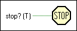

Stop Function
Owning Palette: Application Control VIs and Functions
Requires: Base Development System
Stops the VI in which it executes, just as if you clicked the Abort Execution button on the toolbar. Before you call this function with a TRUE input, be sure to complete all final tasks for the VI first, such as closing files, setting safe values for devices being controlled, and so on.
If you wired the input, stop occurs only if the input value is TRUE. The default is to stop as soon as the node that is currently executing finishes.

 Add to the block diagram Add to the block diagram |
 Find on the palette Find on the palette |